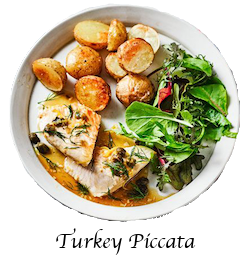

Turkey Piccata

A healthier version of piccata veal, that's gluten free and dairy-free, cooked in a lemon butter sauce and served with crisp baby roast potatoes
Ingredients:
- 3 tbsp oil
- 750g baby potatoes , larger ones halved
- 4 turkey breast steaks
- 2 garlic cloves , finely chopped
- 3 tbsp capers
- 250ml gluten-free chicken stock
- 1 lemon , zested and juiced
- small pack dill , roughly chopped
- green salad , to serve
Steps:
- Heat oven to 200C/180C fan/ gas 6. Toss the potatoes with 2 tbsp of the oil, season and roast for 40-45 mins.
- Heat the remaining oil in a large frying pan. Season the turkey steaks and cook for 2-3 mins each side until cooked through, then remove and set aside. Add the garlic, capers, stock and lemon juice to the pan and bubble for 3-4 mins. Return the turkey to the pan to warm through. Stir in the dill and lemon zest, then serve with the potatoes and salad.